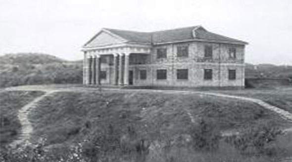

历史沿革
历史沿革
 返回
返回
丽水学院办学历史可追溯到1907年创办的处州师范学堂。1912年改称“处州师范学校”。1913年处州师范学校改称“浙江省立第十一师范学校”。1923年“十一师范”与“十一中”合并，分设中学部和师范部。1937年抗日战争全面爆发后，学校一度停止招生，浙江大学等省内十多所大中学校迁到丽水办学，1939年还创办了英士大学，其校址就在丽水师范专科学校。抗战胜利后，1946年在云和县重建浙江省处州师范学校。1949年处州师范学校从云和迁到丽水三岩寺，1953年改称丽水师范学校。1978年4月设立浙江师范学院丽水分校。在此基础上，1978年12月经国务院批准设立丽水师范专科学校。2000年8月，浙江省少数民族师范学校和松阳师范学校并入丽水师范专科学校。2003年3月，省政府批复同意丽水师范专科学校与丽水职业技术学院（丽水职业技术学院由丽水工业学校与丽水农业学校合并而成）合并，并以此为基础筹建本科层次的丽水学院。2004年5月，国家教育部批准学校升格更名为丽水学院。2007年3月，丽水卫校并入。
- 
- 1960年的处州学堂
- 抗战时期创办的英士大学旧址
- 1946年，在云和重建处州师范学校
- 1951年的处州师范学校